Contents
Assignment 4, Image Segmentaion
CS736: Medical Image Computing, IIT Bombay (Spring 2019) Dhruv Shah and Ansh Khurana
Find implementation of FCM seg. + bias correction in FCM.m
warning('off', 'all'); clc; clear all; close all;
Question 1
load("../data/assignmentSegmentBrain.mat"); % Constants figure; K = 3; % Tunable parameters - q = 3; weight_sigma = 2; w = fspecial('gaussian', 13, weight_sigma);
Report
1 a)
The value of q = 3 (Fuzzy clustering)
1 b)
Neighbourhood mask is a gaussian filter (13x13, std. deviation = 2)
w
w =
Columns 1 through 7
0.0000 0.0000 0.0001 0.0001 0.0003 0.0004 0.0004
0.0000 0.0001 0.0002 0.0006 0.0011 0.0015 0.0018
0.0001 0.0002 0.0007 0.0018 0.0033 0.0048 0.0054
0.0001 0.0006 0.0018 0.0042 0.0079 0.0114 0.0129
0.0003 0.0011 0.0033 0.0079 0.0147 0.0213 0.0242
0.0004 0.0015 0.0048 0.0114 0.0213 0.0311 0.0352
0.0004 0.0018 0.0054 0.0129 0.0242 0.0352 0.0399
0.0004 0.0015 0.0048 0.0114 0.0213 0.0311 0.0352
0.0003 0.0011 0.0033 0.0079 0.0147 0.0213 0.0242
0.0001 0.0006 0.0018 0.0042 0.0079 0.0114 0.0129
0.0001 0.0002 0.0007 0.0018 0.0033 0.0048 0.0054
0.0000 0.0001 0.0002 0.0006 0.0011 0.0015 0.0018
0.0000 0.0000 0.0001 0.0001 0.0003 0.0004 0.0004
Columns 8 through 13
0.0004 0.0003 0.0001 0.0001 0.0000 0.0000
0.0015 0.0011 0.0006 0.0002 0.0001 0.0000
0.0048 0.0033 0.0018 0.0007 0.0002 0.0001
0.0114 0.0079 0.0042 0.0018 0.0006 0.0001
0.0213 0.0147 0.0079 0.0033 0.0011 0.0003
0.0311 0.0213 0.0114 0.0048 0.0015 0.0004
0.0352 0.0242 0.0129 0.0054 0.0018 0.0004
0.0311 0.0213 0.0114 0.0048 0.0015 0.0004
0.0213 0.0147 0.0079 0.0033 0.0011 0.0003
0.0114 0.0079 0.0042 0.0018 0.0006 0.0001
0.0048 0.0033 0.0018 0.0007 0.0002 0.0001
0.0015 0.0011 0.0006 0.0002 0.0001 0.0000
0.0004 0.0003 0.0001 0.0001 0.0000 0.0000
1 c)
K-means clustering is used to initialize memberships of the data points. This is a good initialization choice according to the 'pyramid' approach of computation where a coarser result is used for initializing a more complex algorithm.
y= imageData; mask = imageMask; [M, N] = size(y); memberships = zeros(M, N, K); data = reshape(y,M*N, 1); ids = kmeans(data, K); means = zeros(1,3); means(1) = mean(data(ids == 1)); means(2) = mean(data(ids == 2)); means(3) = mean(data(ids == 3)); for k = 1:K temp = zeros(M, N); temp(ids == k) = 1; temp = temp .* mask; % imshow(temp); % figure; memberships(:, :, k) = temp; end for k = 1:K imshow(memberships(:, :, k)); title(strcat("Initial Membership of class ", num2str(k))); figure; end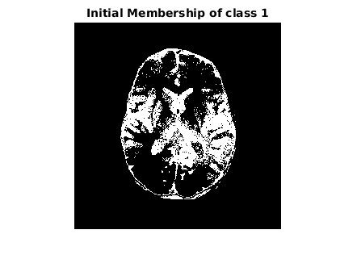 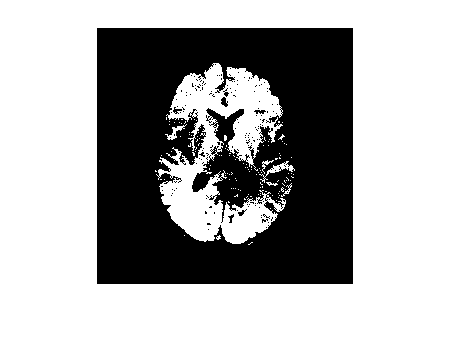 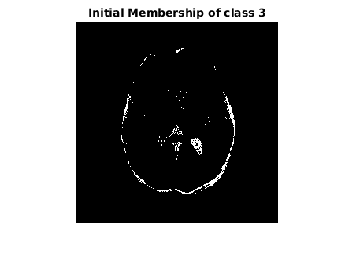
1 d)
Initially we started with means corresponding to k-means clustering. However, since there is a bias field present, we tuned the initialiazation of means to [0.1, 0.9, 0.3] for better results in lesser number of iterations.
1 e)
imageData = imageData .* imageMask; [means, bias, memberships, cost_log, bias_removed, residual_image] = FCM(imageData, q, K, imageMask, w); plot(cost_log); xlabel("Number of iterations"); ylabel("Cost function"); title("1 e) Cost function versus the number of iterations"); figure;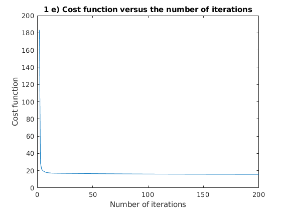
1 f)
imshow(y); title("Original corrupted image"); figure; for k = 1:K imshow(memberships(:, :, k)); title("Memberships for class " + num2str(k)); figure; end imshow(bias); title("Optimal bias field estimate"); figure; imshow(bias_removed); title("bias removed image"); figure; imshow(residual_image); title("Residual Image");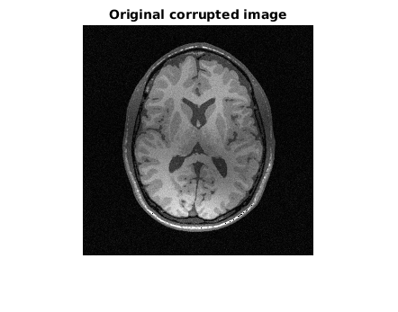 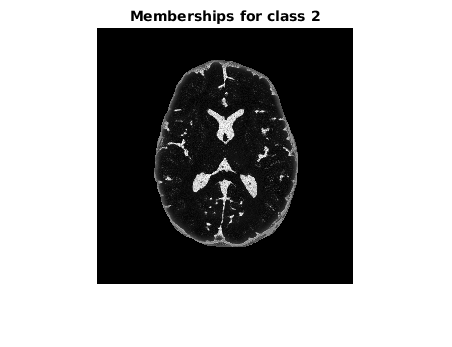 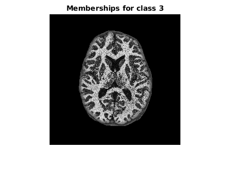 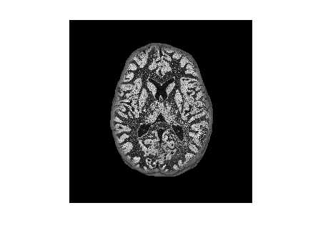 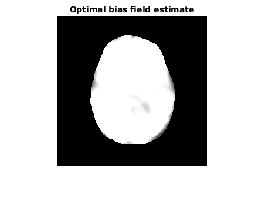 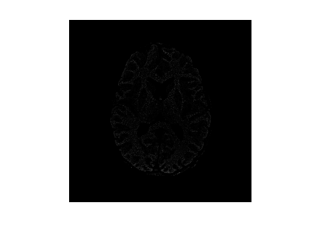 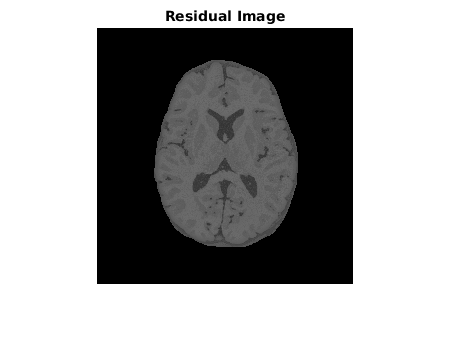
1 g)
Optimal estimates for class means with the first mean fixed to 0.1
means
means =
0.2000 0.4307 0.3696